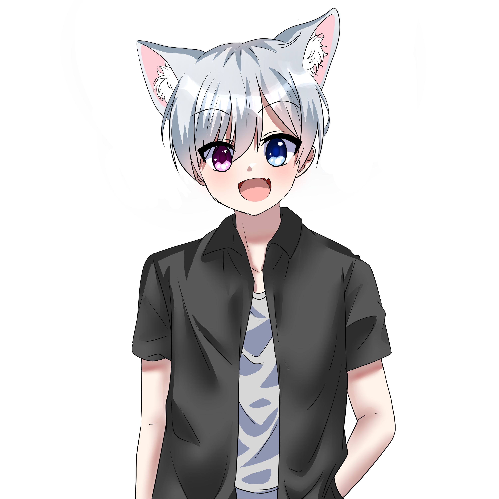
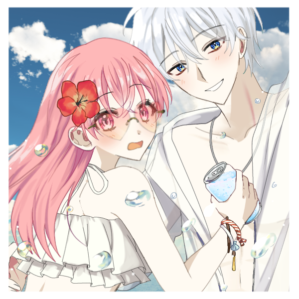
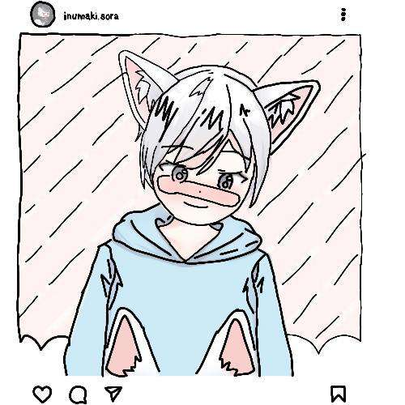
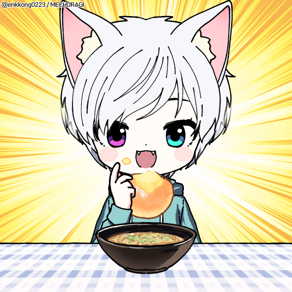
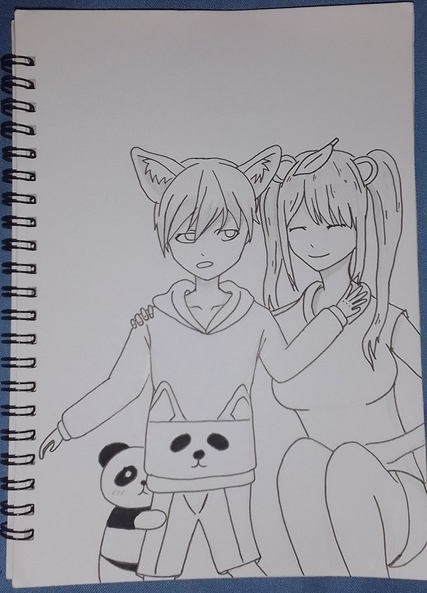

Selamat datang di Website Inumaki Sora
Halo semuanyaaaa...
Perkenalkan nama ku Inumaki Sora, biasa dipanggil Sora.
Salam kenal yaa...
About SoraFanArt Sora

FanArt by Sora

FanArt by Sora

FanArt by Sora

FanArt by Sora
FanArt by Sora

FanArt by Sora
Debut Sora
About Sora
Inumaki Sora adalah seorang anak dari raja dan ratu dari kerajaan Doggo. Tapi dikarenakan terjadinya pemberontakan
Sora harus kabur menggunakan gerbang teleportasi, tapi karna terjadi suatu kesalahan Sora malah teleport ke gerbang
utama teleportasi yang menghubungkan dengan dimensi manusia. Dan setelah selesai di dunia manusia, jadilah Sora yang
sekarang ini kalian semua lihat.